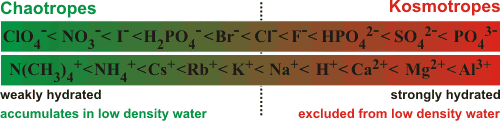
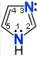

α,α-Trehalose
 Definitions of kosmotropes
and chaotropes
Definitions of kosmotropes
and chaotropes
 Ionic kosmotropes and chaotropes
Ionic kosmotropes and chaotropes
 Nonionic kosmotropes and chaotropes
Nonionic kosmotropes and chaotropes
 Urea
Urea
 Imidazole
Imidazole
 Guanidinium
Guanidinium
 α,α-Trehalose
α,α-Trehalose
 Ectoine
Ectoine
 Trimethylamine N-oxide (TMAO)
Trimethylamine N-oxide (TMAO)
 Hyaluronic acid
Hyaluronic acid
The terms 'kosmotrope' (from Greek κοσμος, order) and 'chaotrope' (from Greek χαος, disorder) originally denoted solutes that stabilized, or destabilized respectively, proteins and membranes. Chaotropes unfold proteins, destabilize hydrophobic aggregates and increase the solubility of hydrophobes, whereas kosmotropes stabilize proteins and hydrophobic aggregates in solution and reduce the solubility of hydrophobes. A 2015 review makes a strong case for reverting to these meanings [2361]. However, with most contemporary literature using these terms to refer to the apparently correlating properties of increasing or decreasing respectively, the structuring of water (a review of structure-making and structure-breaking ions has been presented [1567]).
In 2014, the terms kosmotropes and chaotropes were quantified in terms of hydrophobicity and hydrophilicity [2212]. Although useful, the terminology may sometimes be misleading as such properties may vary depending on the circumstances, the method of determination, or the solvation shell(s) investigated. For example, a solute may not always act in the same way at different concentrations or in the presence of macromolecules or gels [276]. Also, some solutes with less well-defined properties (for example, urea) are sometimes classified as kosmotropes [276] and sometimes as chaotropes [283]. Univalent ions are bound with different strength to the headgroups of surfactant dimers [3812]
kosmotropic : H+ > Li+ > Cu+ > Ag+ > Na+ > K+ > Rb+ > Cs+ > NH4+ > Tl+ : chaotropic
and this ion specificity observed is mainly related to the kosmotropic and chaotropic properties of ions.
An alternative term used for kosmotrope is 'compensatory solute' as they have been found to compensate for the deleterious effects of high salt or high chaotrope contents [2513], which destroy the natural hydrogen-bonded network of water in osmotically stressed cells. However, behavior as a kosmotrope in one system does not mean that a solute may behave as a 'compensatory solute' in another or even stabilize the structuring of water in a third. Both the extent and strength of hydrogen bonding may be changed independently by the solute, but either of these has been used as measures of order-making. It is, however, the effects on the extent of quality hydrogen-bonding that is of overriding importance as true kosmotropes shift the local equilibrium,
less
dense water (for example, ES)  more dense water (for example, CS)
more dense water (for example, CS)
to the left, and chaotropes shift it to the right. The ordering effects of kosmotropes may be confused by their diffusional rotation, creating more extensive disorganized junction zones of greater disorder with the surrounding bulk water than less hydrated chaotropes. It seems clear that most kosmotropes do not cause a significant net structuring in water [595].
Temperature and pressure both affect the kosmotropic/chaotropic status, with the effects disappearing at high temperatures, particularly at high concentrations [1170]. For example, at very high pressures (0.6 GPa), Na+ ions change from being weak kosmotropes into weak chaotropes as their links to water molecules are preferably broken [1170].
It is possible to extend from kosmotropes to chaotropes and into the realm of hydrotropes (structure-disrupting ions and surfactants).
[Back to Top  ]
]
Ionic kosmotropes a should be treated differently from nonionic kosmotropes, due mainly to the directed and polarized arrangements of the surrounding water molecules. They are best not described as 'structure-makers' or 'structure-breakers' in terms of their effects on the properties of water outside their immediate solvation shells [1389]. Many of Earth's minerals are formed from the less soluble kosmotropes.
Chaotropes and kosmotropes in approximate order of strength

Thiocyanate ion
Generally, ionic behavior parallels the Hofmeister series. Large singly charged ions, with low charge density (for example, Ph4B− (tetraphenylborate anion), Ph4As+ (tetraphenylarsonium cation), SCN−, H2PO4−, HSO4−, HCO3−, I−, Cl−, NO3−, NH4+, Cs+, K+, (NH2)3C+ (guanidinium), and (CH3)4N+ (tetramethylammonium) ions; exhibiting weaker interactions with water than water with itself and thus interfering little in the hydrogen-bonding of the surrounding water), are chaotropes. So-called superchaotropic ions, such as the large hydrophilic (0.7 nm diameter dodecahedral) dodecaborate [B12H12]2− anion (dodecahydridododecaborate) or a polyoxometalate (POM, e.g., α-keggin, [PW12O40]3−, 1.1 nm diameter cuboctahedral), lie to the left of the green end of the diagram [3927, 4064].
The dodecaborate [B12H12]2− anion
Polyoxometalate [PW12O40]3− anion
Dodecaborates (see right) and POMs (see left) are super-chaotropes due to their large size and delocalized charge (e.g., the PW12O40]3− anion has a low surface charge density of 6.5 e− ˣ nm−3) [3928].
Small or multiply-charged ions, with high charge density, are kosmotropes (for example, SO42−, HPO42−, Mg2+, Ca2+, Li+, Na+, H+, OH− and HPO42−, exhibiting stronger interactions with water molecules than water with itself and therefore capable of breaking water-water hydrogen bonds). b The Jones-Dole coefficient has also been used to classify ionic kosmotropes and chaotropes with negative B coefficients indicating chaotropes and positive B coefficients indicating kosmotropes.
Kosmotropes remain hydrated near the water surface, while the chaotropes lose their hydration sheath [1663]. The radii of singly charged chaotropic ions are greater than 1.06 Å for cations and greater than 1.78 Å for anions [284]. Thus the hydrogen bonding between water molecules is more broken in the immediate vicinity of ionic kosmotropes than ionic chaotropes [2046]. Reinforcing this conclusion, a Raman spectroscopic study of the hydrogen-bonded structure of water around the halide ions F−, Cl−, Br− and I− indicates that the total extent of aqueous hydrogen-bonding increases with increasing ionic size [685] and an IR study in HDO:D2O showed slow hydrogen bond reorientation around these halide ions getting slower with respect to increasing size [895]. It is not unreasonable that a solute may strengthen some of the hydrogen bonds surrounding it (structure making; for example, kosmotropic cations will enhance the hydrogen bonds donated by the inner shell water molecules) while at the same time breaking some other hydrogen bonds (structure breaker; for example, kosmotropic cations will weaken the hydrogen bonds accepted by the inner shell water molecules) [274], so adding to the confusion in nomenclature. Kosmotropic ions such as Na+ reduce the average diffusion of water by slightly less than that expected if the hydrated water was not diffusionally-active [2001]. Using a method that links the self-diffusion of water to its reorientational motion, it has been shown that chaotropic ions preferentially bind to, and thus stabilize, the transition state of water motion enabling diffusion [3206]. Kosmotropic ions suppress the formation of this transition state, so slowing diffusion [3206].
Much local organization around a solute is entropically compensated by the reduced organization between the water molecules further away [2087], such that K+ and Cl− (and Ar) have almost identical hydration entropies [1495]. Other factors being equal, water molecules are held more strongly by molecules with a net charge than by molecules with no net charge, as shown by the difference between zwitterionic and cationic amino acids [532].
Somewhat surprisingly, chaotropic ions such as K+ slightly increase the average diffusion of water at moderate to high concentrations (0.25 - 2 M) [2001], showing that they have a net destructive effect on the structuring in water at these concentrations. Weakly hydrated ions (chaotropes, K+, Rb+, Cs+, Br−, I−, guanidinium+) may be 'pushed' onto poorly hydrated surfaces by strong water-water interactions with the transition from strong ionic hydration to weak ionic hydration occurring where the strength of the ion-water hydration approximately equals the strength of water-water interactions in bulk solution (with Na+ being borderline on the strong side and Cl− being borderline on the weak side) [284]. Strongly hydrated surfaces, where the water molecules are prevented from forming ES-like expanded water clusters, favors strongly hydrated kosmotropic ions and effectively repels weakly hydrated chaotropic ions [1726]. Neutron diffraction studies on two important chaotropes (guanidinium and thiocyanate ions) show their very poor hydration, supporting the suggestion that they preferentially interact with the protein rather than the water [488]. In contrast to the kosmotropes, there is little significant difference between the properties of ionic and nonionic chaotropes due to the low charge density of the former.
The optimum stabilization of biological macromolecule by salt requires a mixture of a kosmotropic anion with a chaotropic cation. As ionic kosmotropes primarily achieve their increased structuring solely within their hydration shell, they partition into the more dense (CS) water where they can obtain this hydration water more readily. In contrast, the ionic chaotropes, by avoiding interference with water's hydrogen-bonded network, tend to clathrate formation within the less dense (ES) environment. Thus there is agreement with the defining characteristic of an ionic chaotrope in that it partitions selectively into low-density water, whereas a kosmotrope partitions selectively into high-density water [276]. The stabilizing of structured low-density water (by ionic chaotropes) in turn stabilizes the hydration shell around lower molecular mass hydrophobes, as seen in the promoted association of polyene antibiotics by ionic kosmotropes and the stabilization of their solution by ionic chaotropes [1030].
In an attempt to understand how the kosmotropic and chaotropic ions in the Hofmeister series affect the water-water interactions, the water clustering surrounding different salts has been examined at the MP2 level with the aug-cc-pVDZ basis set [4274]. A doubly kosmotropic system (Ca2+ + SO42−) was largely dominated by the ions' effect on the neighboring water. In contrast, a doubly chaotropic system (NH4+ + ClO4−) exhibited much weaker ion-water interactions, and the surrounding water clusters had more significant contributions from water–water interactions but not surpassing those found in pure water. There was no evidence suggesting that water–water interactions in the clusters were enhanced in the presence of either kosmotropic or chaotropic ions.
[Back to Top  ]
]
Nonionic kosmotropes are very soluble well-hydrated molecules with little tendency to aggregate, having no net charge and strongly hydrogen-bonding to water, that stabilize the structure of macromolecules in solution. They are preferentially solubilized within the bulk of the solution and excluded from the solvation layers of macromolecular surfaces. Consequentially, they decrease the water diffusion around the proteins and the exchange rate of backbone amide protons [621]. This leads to the dehydration of such surfaces and ensures that they are less flexible and therefore more thermally stable but less enzymatically active. c Kosmotropes reduce the volume of water available to hydrate the larger surface exposed by denatured proteins, tending to prevent the denaturation process (the 'excluded volume' effect). These kosmotropes may be divided into two groups which act somewhat differently: (1) polyhydroxy compounds fit in well with the hydrogen-bonding arrangements but stabilize any cluster 'flickering' between a continuum of hydrogen bond rearrangements, as their hydroxyl groups are similarly separated to water-water separations (see sugar hydration), and (2) zwitterions where the balance between hydrophilicity, f hydrophobicity, f anionic, and cationic characteristics ensures good solubility but forming only weak net interactions to the surrounding water. Many, if not all, such kosmotropes are also useful as cryoprotectants (see below).
Chaotropes break down the hydrogen-bonded network of water, so allowing macromolecules more structural freedom and encouraging protein extension and denaturation. Kosmotropes are stabilizing solutes that increase the order of water (such as polyhydric alcohols [307], trehalose, trimethylamine N-oxide, glycine betaine, ectoine, proline, taurine [3185], and various other zwitterions). In contrast, chaotropes create weaker hydrogen-bonding, decreasing the order of water, increasing its surface tension (but see anomaly) and destabilizing macromolecular structures (such as guanidinium chloride and urea at high concentrations).
Glucose acts as a kosmotrope, enhancing both hydrogen-bonding and hydrophobic
interactions [283]. Somewhat unexpectedly, whereas L-amino acids and D-glucose
prefer a less dense (ES)
environment, D-amino acids and L-glucose prefer denser
(CS)
water [574];
a consequence of which may be that condensed polymers of the
former (rather than their optical isomers) may have formed
in primordial clays so setting the trend for the molecular
evolution [374]. Although
the arrangement of oxygen atoms within water clusters may
be symmetrical, the energetic preference for particular hydrogen-bonding
arrangements ensures the necessary chirality. 
Kosmotropes
a Trimethylamine N-oxide
b Proline
c Ectoine; R varying
e Glycine betaine
f 3-Dimethylsulfoniopropionate
Generally, the kosmotropic/chaotropic nature of a solute is determined from water's physical bulk properties, often at a necessarily high concentration. The change
in the degree of structuring may be found, for example, using NMR ([307])
or vibrational spectroscopy. Protein-stabilizing
solutes (kosmotropes) increase the extent of hydrogen-bonding
(reducing the proton and 17O spin-lattice
relaxation times) whereas the NMR chemical shift may increase
(showing weaker bonding, for example, the zwitterionic kosmotrope, trimethylamine N-oxide) or decrease (showing stronger bonding, for example, the polyhydroxy kosmotrope, trehalose). Trehalose
shows both a reduction in chemical shift and relaxation time,
if to a lesser extent does the protein stabilizer (NH4)2SO4. NaCl only shows a reduction in chemical shift. The protein destabilizer KSCN shows an increase in relaxation
time and a reduction in chemical shift (note these NMR parameters
are both time-averaged and structurally-averaged values, where the
weighting of the averaging is unclear) [281]. Vibrational spectroscopy may make
use of the near-IR wavelength near 5200 cm−1 (v2 + v3 combination), which shifts towards
a longer wavelength (smaller wavenumber) when hydrogen bonds
are stronger [282].
It should be noted, however that the ranking of kosmotropic/chaotropic
character by different measures shows inconsistencies. [Back to Top  ]
]
Urea
Urea (H2NCONH2; carbonic diamide) is of particular interest because of its interactions with proteins. It can only strongly bind one water molecule using two hydrogen bonds, donating from a nitrogen atom and accepting onto the urea oxygen atom [1130] but will also hydrogen bond more weakly to about 4 - 7 moles further water molecules per molecule of urea. Otherwise, it can make a hydrogen bond to itself (see (b) opposite), or water with close to equal ease, and hydrogen bonds to water slightly weaker than water to itself but seems to increase the water-water interactions [1233]. A force field description of urea has been described [3833].
Urea.(H2O)5, from [2461]
Different studies describe urea as either a poor chaotrope or poor kosmotrope over much of its concentration range [1171, 1233]. Its conformation is not well-defined in water [1309], and it can fit into a tetrahedral water network showing little preference between ES-like and CS-like water clusters [1171, 2239], perhaps behaving rather like a water dimer [1130]. However, this is not shown in a molecular dynamics study [1233].
Thermodiffusion (the Soret effect) h is a sensitive method for investigating a solute's hydration. Thermal diffusion measurements of urea/water solutions show a change between low concentrations (positive Soret coefficient, higher hydrophilicity with urea more concentrated near the cold end than near the hot end) and high concentrations (negative Soret coefficient, higher hydrophobicity). The transition between these two regimes is observed in urea solutions at a concentration of around 30% by weight (5.4 M) [3125].
Urea, showing hydration and oligomer formation
Urea with small clusters of water molecules has been modeled (see the almost planar cluster left) [2461]. Other work has shown that urea weakens both hydrogen-bonding and hydrophobic interactions [283]. The idiosyncratic behavior of urea may well be due to its concentration-dependent nose-to-tail oligomerization (where the carbonyl group of one urea molecule accepts two hydrogen bonds to the two amines of the next urea molecule); cyclic hydrogen-bonding dimers and oligomers behaving differently from monomers [364] and the system becoming more organized with increasing urea concentration [2451].
Urea dimer showing hydrogen bonds
Thus, when urea molecules are less than optimally hydrated, urea hydrogen bonds to itself (see opposite) and any protein present (significantly involving the peptide links [528]) in the absence of sufficient water. It so becomes more hydrophobic and hence more able to interact with further sites on the protein, leading to localized dehydration-led denaturation (i.e., urea is preferred over water for binding to the protein backbone so leading to protein denaturation [1711, 2324]). By replacing and removing the water from the protein surface, urea acts oppositely, in denaturing proteins, to increased pressure [2324]. The effect of pressure on the hydrogen bonding in urea solutions has been examined using THz spectroscopy. This study [3821] revealed a blue shift of the intra-molecular mode of urea centered at 150 cm−1 of Δν = 17 cm−1 upon increasing the pressure up to a GPa. This was attributed to an increase in the number of affected water molecules from 1 - 2 up to 5 - 7 and the water surrounding the urea molecules less bulk-like.
Both urea and guanidinium (see below) increase the radius of gyration of the intrinsically disordered protein ACTR (activator for thyroid hormone and retinoid receptors) in proportion to their concentrations [2839].
Imidazole and its connecting 'water wire'
Restricted Hartree-Fock wave function (RHF) utilizing the 6-31G** basis set
Imidazole (C3H4N2) is a planar aromatic heterocycle that is highly soluble in water. It is polar (dipole moment = 3.61 D) and amphoteric and can act as both a base (pKa = 7.0 by experiment; gaining a proton on the tertiary amine) and a weak acid (pKa = 14.52 losing the proton on the secondary amine). Imidazole is nucleophilic and can serve as a general base, while the protonated form (imidazolium) can serve as a general acid. At physiological pH (~7.4), imidazole is present both as neutral and protonated species. It forms part of the essential amino acid, histidine, and is a common participant in enzyme catalyzed reactions.
Histidine
The occupied and unoccupied electronic structure of imidazole and imidazolium (see below left) in aqueous solutions has been studied by x-ray emission spectroscopy (XES) and resonant inelastic soft x-ray scattering (RIXS) [3880].
The symmetrical imidazolium ion
Restricted Hartree-Fock wave function (RHF)
utilizing the 6-31G** basis set
Imidazole forms stronger hydrogen bonds to water than to itself and is, therefore, surrounded by water molecules with little imidazole:imidazole hydrogen-bonding [3881]. Although anhydrous imidazole forms linear molecular hydrogen bonds where the imidazole groups are at right angles to each other, in an aqueous solution, these are disrupted, and hydrogen-bonding between imidazole molecules is negligible, as is the pi-bonding stacked parallel interactions. Imidazole can form 'water wires' (see above right, [3882]), rapidly equilibrating the amino groups (~ps). The hydrogen bond structure and dynamics of concentrated imidazole in water have been studied by ab initio molecular dynamics simulations with the Car-Parrinello method [3879]. Overall, the structure of water is little affected by the imidazole or imidazolium groups that behave as kosmotropes.
Imidazole-based ionic liquids lead the field of ionic liquids as they are green solvents, have relatively high thermal stability, facilitate electron or ion motion, coordinate transition metals, and have a hydrophilic ionic nature [3883].
The guanidinium+ ion (left) compared with urea
Guanidinium [1777] is the cation of guanidine and shows a similarity with urea, see right. It is a planar ion that may form weak hydrogen bonds around its edge (see right) [2188, 3799]. However, it may establish strongly-held hydrogen-bonded ion-pairs to protein carboxylate groups, like commonly found quaternary structural arginine-carboxylate 'salt' links. The spread-out positive charge causes the nitrogen atoms to be poor hydrogen-bond acceptors. Also, guanidinium possesses rather hydrophobic surfaces that may interact with similar protein surfaces to enable protein denaturation [571]. Likewise, they have a preference for water/air surfaces [2197].
The hydrated guanidinium+ ion
The hydrophobic surfaces also allow the formation of contact guanidinium-guanidinium ion-pairing [2034] and the similar contact guanidinium-arginine ion-pairing [2199] with the repulsion of the like, if somewhat dispersed, positive charges being compensated by the increased entropy and enthalpy of the released water molecules from the surfaces on forming the stacked pair. The effect of temperature [3069] on guanidinium solutions has been described as being weak. The action of guanidinium is highly dependent upon the concentration and counter-anion with which it was paired. As an example, the salting-out efficacy at low salt concentrations is as follows [2856]:
Guanidinium+ SCN− > (Guanidinium+)2 SO42− > (Guanidinium+)2 CO32−
> Guanidinium+NO3− > Guanidinium+Cl−
Both denaturants (urea and guanidinium) may cause protein swelling and destructuring by sliding between hydrophobic sites and dragging in hydrogen-bound water to complete the denaturation. The hydration of the counterion is important to the action of guanidinium with chloride ions, being only weakly hydrated, allowing the water molecules to easily rearrange around the surface and allowing the denaturation process outlined above. In contrast, sulfate ions hold on to their water molecules very strongly, preventing the water rearrangement and hence preventing the guanidinium-protein interactions and consequent denaturation [1747].
Unexpectedly, the orientation of the molecular plane of methylguanidinium ions at the surface of aqueous solutions is different from that of guanidinium ions being not (near‑)parallel to the surface plane [3149].
α,α-Trehalose
One of the most important kosmotropes is the
non-reducing sugar α,α-trehalose (α-D-glucopyranosyl-(1 1)-α-D-glucopyranoside) (see right and above), found in some bacteria, fungi, plants, and invertebrates where it accumulates in response to thermal stress (structure given above and described in [1675]).
The α, β- and β, β-trehaloses are not naturally found. Trehalose has a much more
static structure than the reducing sugars, due to its lack
of mutarotation, or the other common non-reducing disaccharide,
sucrose (see below left), due to its lack of a furan ring; its two symmetrically-linked glucose units being joined by a very stable glycosidic linkage that is far more stable than the labile β-D-fructofuranoside linkage in sucrose.
1)-α-D-glucopyranoside) (see right and above), found in some bacteria, fungi, plants, and invertebrates where it accumulates in response to thermal stress (structure given above and described in [1675]).
The α, β- and β, β-trehaloses are not naturally found. Trehalose has a much more
static structure than the reducing sugars, due to its lack
of mutarotation, or the other common non-reducing disaccharide,
sucrose (see below left), due to its lack of a furan ring; its two symmetrically-linked glucose units being joined by a very stable glycosidic linkage that is far more stable than the labile β-D-fructofuranoside linkage in sucrose.
Sucrose is a stabilizing molecule but less efficient than trehalose as trehalose perturbs the water structure slightly more than sucrose [3995]. Both inelastic neutron scattering [543] and 17O-NMR show that a rotational restriction exists in trehalose-bound water, indicating that trehalose is definitely a net water-structurer. These stronger interactions d (between the trehalose and water compared to water-water interactions) increase the bioprotective effectiveness of trehalose [887] by preserving the protein hydration-shell [3236], by reducing the (re-)activity of the water molecules, and by creating a rigid shell around biomolecules and so reducing thermal stress [1319]. This effect is increased by the introduction of greater static hydration with trehalose-trehalose interactions [1920].
However, as well as increasing the strength of the hydrogen-bonding (a structuring effect) trehalose interferes with the tetrahedral network of water, which can be said to be a destructuring effect [2885]. This destructuring effect is distinct from what happens with temperature increases of bulk water [3155]. It structures out to at least the third solvation layer e in such a way as to reduce the amount of freezable water [285]; terahertz spectroscopy indicating 27% more hydration water (≈ 190 mols/mol) than lactose and almost four times the hydration water than glucose [1427]. This is caused by an increase in the local structuring, partly due to maximizing the number of singly hydrogen-bonded water molecules (to trehalose) where every hydroxyl group of the trehalose molecule is both a single donor and a single acceptor in the hydrogen bond network. In the crystal, there are no (trehalose) intramolecular hydrogen bonds or oriented water molecules held by two (trehalose) hydrogen bonds, such as in sucrose or cellobiose. There is also a reduced tetrahedrality amongst the associated water molecules [660].
Neutron diffraction studies indicate that the hydrogen bonds to water are somewhat shorter (trehalose-O-H···OH2 ≈ 0.15 nm and trehalose-O···HOH ≈ 0.15 nm) than those between water molecules but with an average of ≈ 0.9 (trehalose -O···HOH) and ≈ 0.15 (trehalose -O-H···OH2) hydrogen bonds per hydroxyl group respectively [1422]. Virtually all the water is associated with single hydrogen bonds to trehalose or first shell water at lower water contents. There is a consequential reduction in the formation of four hydrogen bonds per water molecule compared with bulk water [3779]. Trehalose is particularly effective at stabilizing macromolecules as it has a large hydrated volume (2.5 times that of sucrose, indicating that there is less water for the same volume; that is, low-density water is present [279]). Thus, α,α-trehalose reduces bulk water dynamics at low concentrations (0.1 M), with each affecting ≈ 550 water molecules [2779]. Such reduced bulk water dynamics equates to lowered water activity, so stabilizing biomolecules in the solution. This lack of direct effect (i.e., no trehalose-protein interactions) has also been shown by differential scanning calorimetry (DSC) and viscometry measurements on the myoglobin-trehalose-water system glass transition and protein denaturation temperatures [2780]. The transition from a free aqueous solution to a dense, concentrated glassy state is connected to trehalose's ability to ameliorate an organism's desiccation stress. There is a strong correlation between the glass transition temperature and trehalose's hydrogen bonding strength [4065].
Trehalose can also protect membranes (and whole organisms [1426]) in anhydrobiosis by hydrogen bonding directly to the phosphate groups in the phospholipids at low water content, so spreading their head groups and reducing the membrane's tendency to undergo phase transitions and thus leak during rehydration [1201]. Thus trehalose exhibits different mechanisms of action with proteins from those with membranes [308]. As further protective action trehalose crystals, formed at low water content, can lose (and regain) up to two water molecules per trehalose molecule, without changing their crystal structure or volume [327, 1486].
α,α-Trehalose produced by drought-tolerant rhizobacteria protects host plants against drought. These microorganisms produce trehalose under drying conditions to facilitate their own survival and that of the colonized plant [2752].
Glycerol plus four strongly-bound water molecules
Restricted Hartree-Fock wave function (RHF) utilizing the 6-31G** basis set
α,α-Trehalose is also a natural cryoprotectant, suppressing ice formation in living organisms or tissue and resulting in a higher post-thaw survival rate. Other polyols also cryoprotect, such as ethylene glycol (poisonous but used as automobile antifreeze), propylene glycol (used to reduce ice crystals in ice cream), and glycerol [2685] (used to store biological and pharmaceutical products at low temperatures, see left). There is room for further (weaker) hydration sites, particularly at the terminal hydroxyl groups.
A reversible liquid-liquid transition has been found in a 0.02 molar fraction solution of trehalose at about 0.2 GPa and below 159 K [4418].
The hydration around glycerol has been determined to be about 5.58 water molecules at low glycerol concentrations [3751], see left. Water preferentially donates a hydrogen bond to glycerol than to another water molecule. However, glycerol has a near-equal likelihood for donating a hydrogen bond to either another glycerol or a water molecule [3875]. This increases (statistically) the number of hydrogen-bonds between water and glycerol molecules but decreases the number of hydrogen bonds between water molecules. Glycerol is a useful solute in aqueous solutions and able to promote supercooling by integration into the hydrogen-bond network suppressing crystallization [3753].
Lysine plus eight strongly-bound water molecules
Other kosmotropes, such as trimethylamine N-oxide, lysine [3953] (see left), and proline, are also cryoprotectants. Although cryoprotectants (not unexpectedly) affect the bulk water structure [2685], the resultant structures vary with their structure and concentration. Cryoprotection, therefore, appears to be an interfacial phenomenon like kosmotopism.
Ectoine
Ectoine ((4S)-2-methyl-1,3,4,5,6 pentahydro-pyrimidine-4-carboxylate) is a kosmotrope and a widespread osmolyte found in halophilic microorganisms. g It is a strongly hydrated zwitterion [2630]; (often poorly drawn in the literature [2630], see the correct structure on the right calculated using the Restricted Hartree-Fock wave function (RHF) utilizing the 6-31G** basis set). As with TMAO, ectoine increasies static relative permittivity with increasing concentration, possibly protecting biomolecules against excess ions while delivering their osmotic protection against excessive extracellular salt [2630]. In contrast to TMAO, however, ectoine does not alter the structure of water [3466].
Trimethylamine N-oxide.(H2O)3
Trimethylamine N-oxide (TMAO) [2844] is a very hygroscopic and soluble solid found in saltwater fish, sharks, and crustaceans. They use it to counteract the high pressure at depth. As the concentration of TMAO increases, proteins become more compact, and their radius of gyration decreases [2846]. TMAO hydrates as shown right with three water molecules hydrating the hydrophilic oxygen atom. At high pressures (~ GPa ), four water molecules directly hydrate the hydrophilic oxygen atom [4276]. With six hydrating H2O molecules, a 'chair-like' hexamer attaches (see below left). Given more water molecules, a clathrate shell may form around the hydrophobic methyl group, favoring the 51262 water cage [3828].
Trimethylamine N-oxide.(H2O)6
showing the water 'chair' hexamer
TMAO balances the destabilization effects of urea that are often also present. This allows organisms, such as deep-sea teleost fish, which contain both TMAO and urea, to maintain their protein structure while adjusting their osmotic pressure. It exemplifies the difficulty in describing molecules as structure-makers or structure-breakers as molecules that can form very strong links to water may weaken water-water links further away; whether experimental evidence finds structure-making or -breaking depends on which of these molecules of water are examined. For example, infrared spectroscopy [1893] and concentration-dependent terahertz/far-infrared (THz/FIR) and Raman spectroscopic techniques [2514] both show that TMAO forms strong hydrogen bonds with water. Vibrational sum-frequency generation spectroscopy shows that the methyl groups point away from hydrophobic surfaces indicating a more hydrophilic nature of methyl groups attached to this strongly electron-withdrawing quaternary nitrogen atom and helping to explain TMAO's depletion at such interfaces compared to the bulk solution [1913]. However, using model hydrophobic compounds, fluorescence studies indicate that TMAO reduces hydrophobic interactions in aqueous solutions [2040]. TMAO shows a balance between hydrophobicity and hydrophilicity such that molecules in solution are close to randomly distributed [2928a], as is urea [2928b]. The effect of temperature [3069], pressure [2463], and concentration [3215] on TMAO solutions have been described.
Dimethylformamide.(H2O)6
The nitrogen atom does not make hydrogen bonds
TMAO's protein stabilizing effects seem to reverse the denaturing effect of urea [2713] (betaine also does this [2847]). However, this counteracting role of TMAO in proteins under denaturing condition of urea is in contrast to its reinforcement of urea denaturation on hydrophobic macromolecules [2841]. TMAO and urea show significantly different topological behaviors, with TMAO forming more stable extensive networks and urea forming tightly aggregated local clusters [3758].
TMAO also affects membranes. It reduces the inter-bilayer distance in multi-lamellar vesicles of dimyristoyl phosphatidylcholine [3099]. TMAO does this by being excluded from the lipid interface due to its unfavorable interactions with the lipid head-groups. The change in the osmotic pressure drives the bilayer closure. [Back]
TMAO can partially restore the water hydrogen-bond network against the perturbations induced by the pressure inducing Mg(ClO4)2 [3884].
The hydration of dimethylformamide (see right) is similar to that of TMAO (see above left).
[Back to Top  ]
]
Four residues of hyaluronic acid
Polymers may also act as chaotropes or kosmotropes. Hyaluronic acid is a high molecular weight hydrophilic, glycosaminoglycan lubricant found in epithelial, neural, and connective tissues where it interacts with the surrounding water making it thick and viscous. Its properties are significantly dependent on its hydration.
Hyaluronic acid (see right) consists of a linear chain of repeating acidic dimers and possesses several groups such as amide, alcohol, and carboxylate groups that have different effects on the aqueous environment. Overall it acts as a structure maker ordering the surrounding water molecules and producing a bio-protective function [4006], mutually thermally stabilizing both the water structuring and its own structuring. The spatial extent of the hydration shell can reach up to 475 nm, corresponding to a length of 1600 water molecules [4217].
The excess presence of chaotropic (e.g., Na+, Mg2+) ions or kosmotropic (e.g. NH4+) ions affect the limiting diffusion coefficient of 0.1% sodium hyaluronate. Na+ ions reduce diffusion, and NH4+ produce less resistance to the movement of sodium hyaluronate and thus cause an increase in its diffusion [4210].
[Back to Top  ]
]
a Perhaps ionic kosmotropes should be called antichaotropes to distinguish them from non-ionic kosmotropes. [Back]
Convex dodecahedron of water molecules surrounding an ionic chaotrope compared with the puckered dodecahedral arrangement around ionic kosmotropes
The water dodecahedra are shown only as connected O-atoms of water, surrounding the central ion.
b Opposite is shown a cartoon illustrating the main difference between ionic chaotropes and kosmotropes. Water molecules surrounding ionic chaotropes tend towards a convex dodecahedral (clathrate) arrangement. In contrast, those surrounding ionic kosmotropes tend towards a puckered arrangement with several water molecules lying close to the ion (see elsewhere for more details), causing bent and broken hydrogen-bonding further out. The dodecahedral water cluster may be thought of as continually fluctuating (over a period of a few ps or so, see [895]), interconverting between convex and puckered forms with the preferred clustering governed by the chaotropic-kosmotropic balance. The strength of the ion-water links explains why the ionic kosmotropes remain hydrated towards the bulk phase near a lipophilic interface, while the ionic chaotropes lose their hydration sheath [1663] and can adsorb to an oil-water interface [3429]. [Back]
c A few adventitious and deleterious enzymatic and non-enzymatic reactions may occur during lengthy dehydration, which may be reduced by the presence of specific amphiphilic molecules that concentrate at the interfaces [321]. [Back
]
d This 'stronger' character of the system is sometimes referred to as 'less fragile' [232]. [Back]
e This description was disputed by 2010 neutron diffraction experiments combined with empirical potential structure refinement simulations that found trehalose solvation induces less extensive modifications of the water structure. [1647].
f Hydrophilicity and hydrophobicity have been quantified using a 1-propanol cosolvent probing methodology [2211]. [Back]
g Osmolytes are molecules that help balance the osmotic pressure between the intracellular and extracellular compartments and help maintain cell volume. Osmolytes can also prevent the denaturation of native proteins and promote the renaturation of unfolded proteins [2673]. [Back]
h The Soret effect (discovered by Charles Soret in 1879) concerns a solution contained in a tube with the two ends at different temperatures. Under steady-state conditions, concentrations usually do not remain uniform between the cold end and the hot end of the tube. The temperature gradient generates the concentration gradient. [Back]
Home | Site Index | Ions | Hofmeister series | Protein hydration | Sugar hydration | Polysaccharide hydration | hydrogen-bonding | LSBU | Top
This page was established in 2001 and last updated by Martin Chaplin on 7 February, 2022